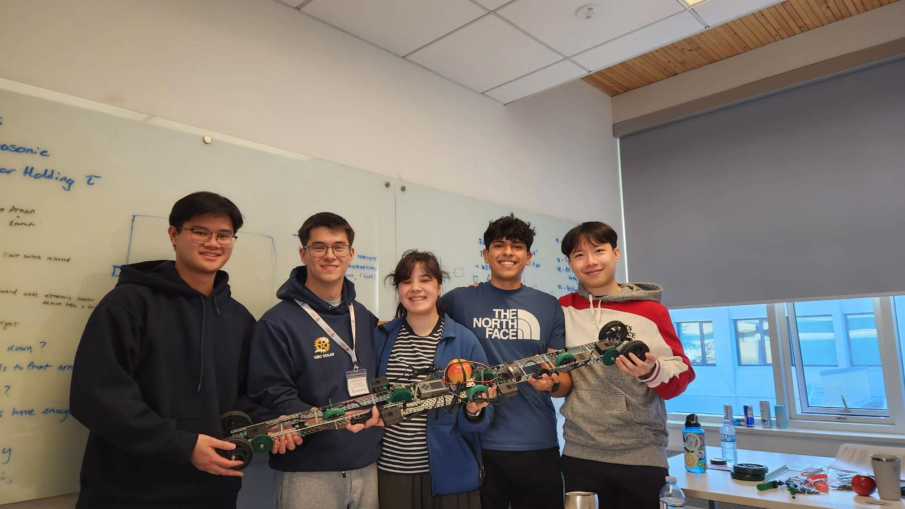

Overview
The Propulsive Mechanical Spanner (PMS) was built in a single day for a VEX hackathon hosted by Hatch as part of the 2026 UBC Senior Engineering Design Competition. The prompt: design a device, built entirely from provided VEX components, capable of autonomously crossing a gap that grows by two inches every round.
Two extendable arms rotate downward from the chassis to physically span the widening gap, the drivetrain then rolls the body across the arms like a ramp, and the arms fold back up once the robot has cleared onto the far side.
The event ran from noon on day one to 5pm the next day. Three competing concepts were sketched and evaluated within the first hour, the winning "Wiper Bridge" design was chosen by consensus, and the rest of day one was spent building, breaking, and fixing the mechanism as the gap kept growing. After dinner, the remaining time went into upgrading the arms to span even larger gaps and troubleshooting the mechanism ahead of the final runs. The team placed second out of five groups.
Skills Used
Team Structure


| Role | Member(s) |
|---|---|
| Software Lead & Woman in STEM | Emma |
| Mechanical Lead | Michael, Dominic Nguyen |
| Instrumentation & Integration Lead | Arman |
| Mechanical / Documentation | Nicholas Yap |
We worked as a distributed, collaborative team: group planning and ideation up front, then parallel task completion once the concept was locked, with everyone sharing prior VEX knowledge as issues came up.
Event Schedule
Day One
Day Two
Concept Generation
Each team member sketched an independent concept for crossing the gap before we regrouped to compare approaches.
Topple Bot
A vertical track on a hinge would be tipped forward by a servo (or slowly lowered under control, since it also had to be pulled back upright), a chain drive would then run the payload carriage across the fallen track, and the track would be pulled back up once the payload reached the far side. Gap span was limited by the length of the track piece, and the chain-drive gears had to stay separate from the brain and payload carriage.
Track Laying Bot
Two wheeled carts, each carrying part of the payload, would lay a flexible track between them as they approached the gap, using a vision sensor to align, then drive across the track they had just laid.
Wiper Bridge Bot
Motor-driven arms mounted at the front and back of the chassis would rotate outward and down, like windshield wipers, extending into a bridge across the gap. A photo sensor would detect when the arms were fully extended, the drivetrain would roll the body across, sensors would detect it had reached the far table, and the arms would fold back up to finish. This concept became PMS.
Concept Selection
We eliminated ideas based on feasibility with the parts on hand, most notably cutting Topple Bot since no chain drive components were available in the VEX kit. Before committing to Wiper Bridge, we checked motor torque and confirmed the ultrasonic range sensor could reliably detect the far table edge.


The team unanimously agreed to proceed with the Wiper Bridge concept.
Planning & Sub-Assembly Development


The mechanical breakdown split the build into front and rear arm sub-assemblies and a central chassis, while the software plan was written out as a state sequence before it was ever built in VEXcode:
Mechanical Assembly & Testing

The arm rotator went through several rounds of gear-ratio testing to balance arm speed against the torque needed to lift and lower a loaded arm.


This produced a successful run-through with no gap and the switches pressed manually, confirming the mechanism itself worked before wiring in autonomous sensing.
Issues & Solutions
| Issue | Root Cause | Solution |
|---|---|---|
| Rear arm not retracting | Interference between arm and chassis | Changed C-channel to L-channel |
| Insufficient motor torque | Drove the shaft with two motors instead of one | |
| System stopping before gap cleared | Limit switch bouncing during deployment triggered the interrupt early | Switched from limit switch to ultrasonic sensor |
| Gears free-spinning | Drive-shaft lock failure | Machined and fabricated our own replacement parts |


| Issue | Root Cause | Solution |
|---|---|---|
| Arms retracting too much | Motor backlash led to imprecise positioning and overshoot | Added a mechanical stop using stand-offs |
| Main body not clearing the gap | Passive wheels catching on the arm bridge | Removed the free-spinning wheels, added skids and bumpers instead |


Optimization
The first working version was intentionally overbuilt as a platform for later optimization: extra arm torque and more rigidity than strictly necessary, so we would have margin to iterate under time pressure rather than rebuild from scratch.
Once we had proven the robot could reliably cross a gap, we spent the remaining rounds extending the arms further to keep pace as the gap grew by two inches each round.

Reflection
What Went Well
Designing the first version as a future-proof platform meant we had torque and rigidity to spare when it came time to extend the arms for bigger gaps. The ideate-test-select workflow got us to a committed concept fast, and building sub-assemblies in parallel with constant feedback kept the whole team moving instead of bottlenecked on one person. We also learned to manage the trade-off between chasing more performance and the risk of running out of time, including recognizing when to freeze the design and stop tinkering. That work paid off with a second place finish out of five teams.
What Could Be Improved
The chassis and arms could have been lighter, and several parts were more material-heavy than the loads actually required. Gear ratios were chosen quickly under time pressure and could be better tuned for the torque-versus-speed trade-off. Given more time, we'd also want a full system redesign to remove the bandaid fixes, like the stand-off stops and skid patches, that accumulated during the day, and replace them with parts built to solve those problems from the start.